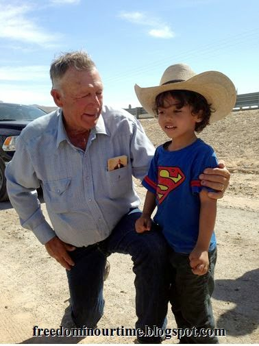
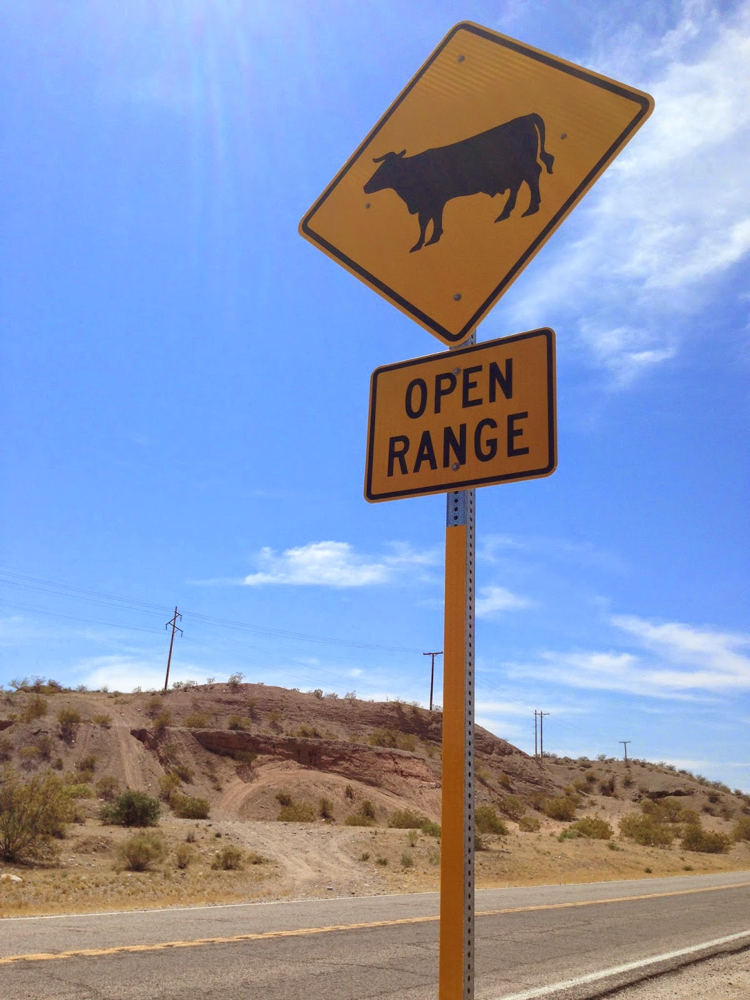
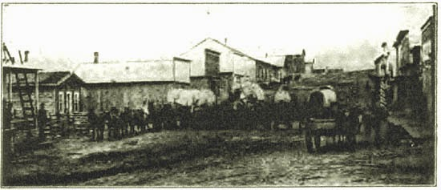

 | |
| Truth, Justus, and the American Way: Cliven Bundy invites a five-year-old to try on a cowboy hat. |

Bunkerville,
Nevada –
War
came to the Western Range that April, a conflict pitting the forces
of order and respectability against a restive band of extremists
accused of cheating the government of what it was due. The
prohibitively stronger side consisted of regulatory agencies allied
with powerful non-governmental organizations determined to control
the land and expel small private interests who made productive use of
it. The unyielding demands of the political elite were met with the
unflinching defiance of rural ranchers, leading to talk of a “range
war.”
Eventually
the ranchers exhausted the patience of the government, which deployed
dozens of heavily armed Regulators to the county under orders to put
down the rebellion. This would mean arresting – or shooting –
anybody who resisted. Rather than submitting, the rebels – with the
support of the county sheriff and the aid of several veterans of the
most recent war – mobilized to confront the threat. Citizens
coalesced into a militia and rode out on horseback to confront the
invaders at their staging area.
To
the consternation of the government and the respectable media, the
rebels held their ground, forcing the Regulators to retreat.
This,
in broad outline, is the
story that unfolded at an overpass outside Bunkerville, Nevada on
April 12, when hundreds of citizens – confronting paramilitary
Regulators who were prepared to gun them down – compelled the BLM
to return hundreds of cows the agency had stolen from the family of
rancher Cliven Bundy to punish him for failing to pay grazing fees
the agency had imposed on him without legitimate authority.
This act
of government-licensed cattle rustling was carried out by "contact cowboys"* who were aided by a paramilitary force of roughly 200
people from the Bureau of Land Management, which is, from a
constitutional perspective, a bastard agency.
 |
| (All Bunkerville photo credits: Scott Watson.) |

Through
what must be considered an act of Providence, no lives were lost on
April 12.
A bloodier version of the same story played out on the same
day 122 years ago in Wyoming's Johnson County: Hundreds of citizens
surrounded the TA Ranch, which was the base of operations for dozens
of gunmen who had been deputized by the state government, provided
with a roster of troublesome local ranchers, and ordered to execute
every man whose name was inscribed on the kill list.
In
both cases, the aggressors – the BLM and federal comrades in
Bunkerville, a corporatist clique called the Wyoming Stock Growers
Association in Johnson County – claimed to be acting in the name of
the law, which for them was digested to a single arrogant claim: “The
land is ours because we say it is.”
Human lives were lost in
Wyoming's Johnson County War. So far there have been no human
casualties in the BLM's range war against the family and property of
rancher Cliven Bundy. To this point, the invaders have had to be
content with one assault with a deadly weapon (the Taser attack on Ammon Bundy), an act of aggravated assault on a pregnant woman, and the
slaughter of a still-unknown number of the Bundy family's cattle coupled with
extensive damage to their property.

“I have
certain rights there – range improvements and so forth,” Cliven
Bundy told me during an interview near the site of the April 12
standoff.
Although the grazing areas are considered public lands, he
continued, “I did have private property there, and there was
damage. What the law would do here – they [the Feds] have four
Metro [police] officers out there twenty-four hours a day protecting
their `property.' A few days ago, though, I had almost 400 cattle out
there [under BLM control] and they didn't give a damn about that
property.”
At least
one bull was shot while securely penned, and an unspecified number of
other cattle were killed. In addition, Cliven pointed out, “They
tore up water lines and cut water tanks in two.”
“The
damage is very extensive,” Cliven's son Ryan told me, holding a
complaint he was filing with the Clark County Sheriff's Office.
“There were 200 BLM people out there, and they all had off-road
vehicles, in addition to the contract cowboys [hired by the Feds to
confiscate the cattle] and they have just tromped this ground. Roads
meant nothing to them. First they widened the roads with heavy
equipment, and then they didn't stay on the roads. They would expect
a normal person never to overturn a stone, but these guys have just
ravished this land.”

In addition
to wrecking the range improvements that the Bundy family was legally
entitled to make, the BLM Regulators didn't spare the abode of the
incomparably precious desert tortoise, whose preservation was the
stated rationale for driving cattle ranching into near-oblivion in
Clark County.
“We found
several places where their trucks have caved in tortoise dens,” Ryan Bundy told me, his voice laden with weary disgust. “Talk
about hypocrisy.”
The
BLM was forced to withdraw its armed Regulators without firing a shot
on April 12. But the agency has made clear its intention to continue
its efforts to drive Bundy – the last of Clark County, Nevada's
cattle ranchers – from range land the federal government illegally
claims as its own.
“Well,
it's not over,” insisted
Nevada Senator Harry Reid, who working in concert with his son
Rory (a Clark County Commissioner and quondam gubernatorial candidate) and former Reid land-use adviser
Neil Kornze (who
was approved as BLM director on April 8) has played a central
role in the effort to uproot the Bundy family from their land. “We
can't have an American people that violate the law and then just walk
away from it.”
“We
believe in a country in which we are subject to laws and you can't
just ignore the laws we don't like,” sniffed
Rory Reid. “I think clearly if state and local prosecutors look
at this more closely, they're going to find that he broke the law and
he should be prosecuted.”
After
the retreat on April 12, the BLM sent four ominous-looking certified
letters to the Bundy home.
| Hereditary commissar Rory Reid. |

“I've
not opened them,” Cliven Bundy explained to me, a subtle smile
tugging at the corner of his mouth. Reports have been put in
circulation that the BLM – under the influence of the Reid dynasty
– may eventually induce the Sheriff's Office to raid the Bundy
family's home.
Cliven has said that if the Sheriff is issued a
warrant signed by judge of appropriate jurisdiction, he will turn
himself in.
Volunteers acting as private peace officers stationed
along checkpoints leading to the Bundy home told me that if the
Sheriff's office presents a valid warrant, they will do nothing to
interfere – but that a SWAT-style raid would lead to trouble.
Cliven
isn't burdened with any illusions about the kind of people who are
seeking to shut down his ranch.
When
Cliven and his sons went out to inspect the damage to the range land,
they found “a pit – about fifty feet long, thirty feet wide, and
ten feet deep. About a third of it was full of something. We know
there were [cattle] body parts sticking out of it.”
“It
was a mass grave,” concluded Cliven, grimly. “Let me tell you
something – if they hadn't backed off [on April 12] they would have
had mass human bodies.”
No
lives were lost in the Battle of Bunkerville, but the Feds and their
allies clearly see the withdrawal as a tactical retreat, and the wary
peace that currently prevails as a fermata, rather than a coda, in the conflict. The Johnson County War of 1892 illustrates what could
happen if the federal campaign against the Bundys becomes a literal
range war.
The
first victim in the elite's onslaught against homesteaders and
ranchers in Wyoming was a reformed prostitute named Ellen Watson,
more
commonly known as as “Cattle Kate.” Amid murky accusations of
cattle rustling, Watson and her husband, James Averill, were lynched
in 1889, three years before open warfare erupted along the Powder
River.
 |
| Buffalo, Wyoming, circa 1890. |

At the time, a growing segment of the Wyoming population sought alterations to the state's range laws, which had been written
by, and on behalf of, the Wyoming Stock Growers Association. The
Association, for its part, was trying to minimize its losses
following the collapse of a speculative bubble in the cattle industry
during the 1880s.
In
the decade leading up to the invasion of Johnson County, wrote Asa
Shinn Mercer in his turn-of-the- 20th
Century expose The
Banditti of the Plains, “a
craze for cattle company investments was created in the East and also
in the British Isles. Soon the bulk of holding passed into the hands
of corporations and high-salaried officials took charge of the
business, living luxuriously in club house in the various towns and
trusting the real management of herds and ranches to subordinates …
frequently without practical experience.”
The
lure of supposedly easy profits in the cattle industry proved
irresistible to pampered children of privilege, whose dreams of
empire-building in the American West were fueled by such works as
Cattle
Raising on the Plains of North America
by Prussian nobleman and Colorado cattle mogul Baron Walter von
Richthofen. “There is not the slightest amount of uncertainty in
cattle raising,” the Baron assured his fellow elitists
The
parvenus and dilettantes who overran Wyoming included “the black
sheep sons of European noblemen and wealthy youngish adventurers from
New York, businessmen from Paris and Edinburgh, Scotland,” observes
historian Hal Herring. “The Anglo-Beef conglomerate, one of the
world's largest cattle companies, was formed in an office in foggy
London, its investors toasting the vast profits to coming from an
unimaginably raw land across the Atlantic.”
One
inevitable result of the elite onslaught was a culture clash between
the Europeans steeped in feudal conceits and traditions and the
incorrigibly individualistic knights of the plains.
“The
English referred to cowboys as `cow servants,'” Herring points out,
“and the classic Western tale was born of the English lord, a newly
arrived landowner, who rode up to a neighboring ranch and asked the
ranch foreman if his `master' was at home.”
“The
son-of-a bitch hasn't been born yet,” came the cowboy's laconic and
thoroughly unamused reply.
Until
the late 1880s, the elitists who were represented in the Wyoming
Stock Growers Association – and who controlled the state
government – were content to allow actual cowboys to do the work,
while they harvested the profits. During the boom, a growing number of
cowboys acquired sufficient capital to obtain herds and homestead
unapportioned land within what historian Helena Huntington Smith
described as “an empty paradise of waving grass – a cowman's
paradise with the Indians out but the cowmen not yet in.”
This
arrangement worked “very well while the markets ruled high,” Asa
Mercer wrote in his memoir of the period. However, some of the
well-connected eastern cattle companies began to undermine the market
by rounding up “culls” and elderly steers that were “unfit for
beef” and selling them to feeders at inflated prices, an
arrangement that “tickled the avarice of the Eastern or foreign
shareholders and prevented a careful investigation of the methods
employed.” Mercer described this as “wholesale robbery.”
The
speculative cattle bubble likewise led to the over-crowding of
available grazing land, which left “the ranges crowded and the
grass eaten until the winter food was too short to carry the stock
through the cold weather.”
Depletion
of grazing areas accelerated during the drought of 1886, which was
immediately followed by an abnormally severe winter. This “caused
an excessive mortality among all classes of cattle and reduced the
calf crop to fully one half” in Wyoming herds, Mercer recalled. To
meet contracts, the elite-operated companies expanded the practice of
“robbing the herd” by sending inferior quality beef cattle to
Chicago. This likewise had predictable consequences: Beef prices
plummeted more than half – partially because a correction in
inflated prices was overdue, but also because of “the generally
poor condition of the range shipments in consequence of overstocking
and the resulting scarcity of feed.”
At
this point in the classic boom-to-bust cycle, the correct approach
would be to allow over-grown, inefficient cattle corporations to fail
and allow smaller producers to rebuild the cattle market.
This
was precisely what the entrenched interests responsible for that
catastrophe wanted to avoid. Accordingly, aided by the mercenary
press, the establishment cattle cartel generated a propaganda
campaign blaming that collapse on “rustlers,” whose alleged
depredations were aided and protected by an incorrigible public.
Johnson County was depicted as a hotbed of rustler activity.
The
cartel had become entrenched immediately after Wyoming was given
territorial status in 1868. Representatives of “Eastern and foreign
cattle syndicates” dominated the legislature, Mercer insisted, and
the Wyoming Stock Growers Association “virtually shaped the
territorial policy.... Legislative enactments first assumed form the
the executive councils of the association and through its social
prestige were popularized with the masses, even before adoption of
laws.”
In
1891, the cartel-dominated legislature passed a measure creating the
“Board of Livestock Commissioners” with a broad mandate to
“protect the livestock interests of the state from theft and
disease.” To that end the commissioners were instructed to appoint
“stock inspectors” authorized to impose fines and to conduct both
seizures and arrests. This most likely led to the assassination-style killings of ranchers John Tisdale and Orley Jones by a secretive squad of "inspectors."

Rancher Nate Champion, a redoubtable and widely respected man, offered eyewitness testimony that the murderer was an inspector named Joe Elliott, who was indicted and bound over for trial.
This exercise of legitimate judicial authority against the Stock Growers Association's interests prompted the oligarchy to escalate its campaign to annihilate its opposition. The cartel began a concerted
press campaign through major newspapers in eastern cities “to make
their readers believe that a reign of terror existed in half a dozen
counties in the state that could only be overcome by a resort to
arms....”
It
was for that purpose that the Commission recruited a group of
“Regulators” who arrived in Cheyenne on April 2, 1892, in a
Pullman train car – its windows blacked out. Their mission, as
described to them by their commander, Major Frank Wolcott, was to
execute warrants calling for the summary execution of cattle
rustlers, whose names were inscribed on a “kill list.” Each
lethal “warrant service” would earn the trigger-puller a $50
commission to supplement their salary of $5 a day – a very
lucrative arrangement at a time when the standard ranch hand's wage
was $25 a month.
Their
wagons groaning beneath a supply of ammunition sufficient “to kill
every inhabitant of Wyoming,” the death squad -- numbering roughly 50 men -- lit out for the KC
Ranch to cross the first two names from their list – Nick Ray and
Nate Champion, the latter having earned his spot by testifying against Elliott. After taking the ranch's cook and a visiting cowboy
prisoner, the Regulators laid siege to the ranch, killing Ray
immediately.

Champion
sold himself dearly, holding off dozens of heavily armed, ruthless men for
an entire day.
“They
are shooting at the house now,” a preternaturally composed Champion
recorded in a journal that should be regarded as a masterpiece of
stoic literature. “[T]hey have just got through shelling the house
again like hail. I heard them splitting wood. I guess they are going
to fire the house tonight. I think I will make a break when night
comes, if alive.”
As
Champion predicted, the The Regulators eventually employed what would
now be called the “Waco Protocol.”
“The
house is all fired,” wrote Champion in his terse, fatalistic final
entry. “Goodbye, boys, if I never see you again.”
Shortly
before 9:00 on evening of April 8, the invaders flushed Champion from
his burning home and gunned him down. They proceeded to the next target, a homestead known as the TA Ranch.
Champion
had noted in his journal that “If I had a pair of glasses I believe
I would know” some of the invaders who eventually murdered him. His
neighbor, a journalist named Jack Flagg, had a similar thought when
he rode by the ranch during the siege. Flagg wasn't aware that his
name was on the kill list. That fact was abruptly made known to him
when one of the Regulators sent rounds in his direction. Flagg
hastened to the nearby town of Buffalo, where he told Johnson County
Sheriff Red Angus about the assault on Champion's settlement.
While the
Sheriff assembled his posse, the city's leading merchant, a
transplanted Scotsman named Robert Foote, assumed the role of Paul
Revere, dashing through the streets of Buffalo urging residents to
arm themselves and “take a side.” Over the next three days,
recalls Helena Huntington Smith in her definitive book The
War on Powder River, “The
streets were filling with armed men from the nearer ranches, while
riders were sent to distant parts of the country for help to repel
the murders.”
On
April 11, the spontaneously organized citizens' militia arrived at
the TA Ranch to engage the invaders. Snipers took up positions and
trained their gun sights on the main ranch house. Several members of
the militia cobbled together an assault vehicle they called the "Ark." Under covering fire
from snipers they advanced on the enemy, hurling improvised explosive
devices into the building.
The
Wyoming Stock Growers Association, a non-governmental organization
controlled by politically connected cattle interests, urged Acting
Governor Amos Barber to intervene. Barber sent a frantic telegram to
President Benjamin Harrison describing the citizen uprising as a
threat to national security:
“An
insurrection exists in Johnson County, in the state of Wyoming, in
the immediate vicinity of For McKinney, against the government of
said state.... I apply to you on behalf of the state of Wyoming to
direct the United States troops at Fort McKinney to assist in
suppressing the insurrection.”

By
April 12, the citizen militia had taken control of the TA Ranch, and
the Regulators were pinned helplessly inside the stable. On
the following day, Colonel Robert T. Van Horn and the 6th
Cavalry arrived on the scene, no doubt to the relief of the
Regulators and their employers.
That relief rapidly gave way to
consternation when Van Horn deferred to Sheriff Angus, recognized the
legitimacy of the citizen revolt, and made arrangements for the
Regulators to surrender.
Colonel
Van Horn treated “the armed citizenry with the utmost respect,
while making it clear that the fighting had to stop,” Herring
recounts. “To the surprise of the cavalry, as soon as Van Horn
assured the citizens that the Regulators would be arrested and taken
to Fort McKinney, the impromptu militia swiftly disbanded.”
Although
Major Wolcott insisted on surrendering to Van Horn, claiming that he
would fight to the death rather than surrendering to Sheriff Angus,
he disarmed his despondent mercenaries and went peaceably to the
stockade at Fort McKinney. The Wyoming Stock Growers Association
retained enough political clout to arrange the release of Wolcott and
his Regulators without facing criminal charges. But the Association –
which was already reeling from its financial losses – quickly lost
its stranglehold on Wyoming politics.
Within
a few years, the elite-connected cattlemen retired from an industry
for which they were manifestly unsuitable, abandoned a state they had
nearly destroyed, and found other ways to inflict misery on humanity.
While isolated conflicts continued to flare up in the range lands
until the second decade of the 20th Century, Wyoming was
left to manage its own affairs – until the heirs of the elite
interests behind the WSGA devised a new rationale for land-grabbing:
Environmental protection.

“This
isn't about protecting turtles – it's about controlling the land,”
declared Red Bear, an Apache Indian from St. George Utah, who told me
that he had come to Bunkerville “to stand in defense of freedom.”
He described to me how he had been confronted by a BLM official while
walking on the range.
“He
told me that I had to leave, because I had `no right to be on the
property,'” Red Bear said, emitting a disgusted chuckle over the
armed functionary's severe irony deficiency.
“To a Native, that's a
very old story, and it's the same one we're seeing here in
Bunkerville today. The people behind this are driven by greed and
capable of great violence, and it's happening everywhere in the
country. I came here – all of these people came to Bunkerville –
to tell the government and the people working with them that it stops
here.”
Dum spiro, pugno!
*In the original version of this article I reported -- based on previous accounts -- that the BLM-supervised confiscation of Bundy's cattle was carried out by Cattoor Livestock, a firm in Nephi, Utah that has done contract work for the agency in the past. According to Sue Cattoor, "The contractors were Shayne Sampson and Cameron Warner." I regret the erroneous earlier report, and extend my apologies to the Cattoor firm.
20 comments:
Many thanks Will,
I've just downloaded a copy of Perkins' book "Confessions of an economic hitman"
I'm beginning to strongly suspect that this is part of a much bigger picture, of big holders of fe'ral bonds, seeking real assetts and using the threat of putting those bonds on the market (which would crash the market for new bonds and end the governments ability to raise money)
The politicians involved were happy to run those debts up, using them to buy votes and reward cronies
and it looks like they're happy to proffiteer at the expense of people like the Bundy family, as those debts turn sour.
I'm not in America, so can only ask; how far has this story spread outside of libertarian circles? Has the Reuters story of Reid involvement reached the population centres where those who still vote live?
There are several things going on around the world (possible gold backed currencies by China and (if they can get the gold back) Germany, Russian pressure on the petro dollar, which could see foreign reserves of dollars returned to the united state - where they would result in sudden price inflation - the only warning of that would be a sudden uptick in business for exporters...
Likewise, if the crony "privatizations" like the one of the Bundy Ranch - to creditor nation cronies, continue to be blocked, you could see the bond holdings in places like China being shorted - at that point, the fe'rals will loose their ability to borrow - leaving them only with money printing (and risking hyper inflation)
and taxation (theft) as their means of raising funds.
I may be completely wrong with that reasoning, but I suspect that the fe'rals are very insecure at the present time.
A little push at the right time could be all it takes to end the system where costless digits entered in a central bank computer can extract goods and services from all of you.
for a hyper inflation to lead to freedom, rather than to a "strong leader" people need to begin to understand that fiat currency (and fiat law) is a con - an exchange of something of value from you for something with zero value from .guv
at least in the fairy tale, the magic beans that Jack sold the family cow for, had a little real value as use, a paper only currency has none. A hyper inflation is a popular repudiation of that fiat currency.
This could be the beginning of some very interesting times.
Best regards and good luck
Keith
Keep it up Will.
One request: label ALL your photos in your articles. I'm often not sure to whom your photos are referring. Thanks.
I must comment on the photo, I assume of Cliven, mounted horseback proudly exhibiting the ENEMY FLAG!! He obviously is under the continuing delusion, as I've noticed much to my chagrin for many years that all too many cowboy/rodeo types share, that the Caesarian banner they naively wave is the symbol of freedom and liberty of the Declaration Of Independence instead of what it actually represents . . . the same piece of imperial-state cloth their enemies fly while ravaging the West and the proud cattle industry and ranchers under the assorted and sundry diktats of the U.N.'s land-grab-and-control Agenda 21 schemes, Kyoto Protocols, enviro-commie unaccountable bureaucracies, etc. Has Cliven ever seen photos of all the imperial edifices of the oligarchy that he fights against? In every one of them flies the same Leviathan imperial banner! The red/white/blue never really did represent the true american ideal. The Constitution and representative banner cowboys swoon over (have you ever gone to a rodeo?) was conceived in iniquity by the fascistic mercantilist/corporatist/crony kleptocracy of the day, under cover of night, lies, and connivance, with much disagreement by those who saw through the scam and attempted to expose it . . . the creation of Leviathan, not its limitation. And, of course, with the Marxoid and murderous centralizer Lincoln, that piece of traitorous cloth became the symbol of the omnipotent central Leviathan. Cliven and his ilk should also do their homework on the purely-socialistic and submit-to-the-state Pledge Of Allegiance which of course was written by the Leviathan-promoting socialist Francis Bellamy, who from his grave, must be laughing his arse off at all these uninformed americans who pledge to support and submit to the very forces that are attempting control and destroy them. He would also find that the original Pledge 'salute' was not the hand-over-the-heart salute, but rather the Hitlerian salute, which was later changed after a duped public protested. Pathetic. Come on Cliven . . . wake up!! If you must fly some damn flag, fly the Gadsden Flag!
Mr. Grigg,
Thank-you for this article. I appreciate it.
rkshanny, you can argue logically all you want and can call into question the symbolism used to persuade, but until you can convince people emotionally, only a few people will succumb to the logic. Marketeers found this out a long time ago.
The flying of the U.S. Flag is used here as it was originally intended under the U.S. Constitution--as a banner of liberty and freedom and as a banner against tyranny. The Gadsden Flag tends to alienate and disable the brains of the people who would otherwise wake up, thanks to the associations that the media has made in regards to both the Gadsden Flag and the Confederate Flag.
Anon/Keith thanks to the internet the story has reached from coast to coast.
Braindead true believer druids who get their groupthink thoughts from urinestream pressitutes don't care.
Interesting how 85% of Nevada land is gov owned and comrade Dirty Harry is a multimillionaire. China wants something for all that debt and kommissar Dirty Harry and his spawn will serve their communist comrades very well to make sure they get it.
Mr. Grigg,
Fascinating historical analogy. The more things change, the more they stay the same, no?
A tiny wisp of cloud on the horizon, on a sunny day, is how a hurricane begins.
Over here where I am, I cannot show up to help Cliven Bundy, but if you have any contact with him, please tell him and those who have collected at the ranch that this affair is NOT over. The psychopaths who think they own the rest of humanity are right now sitting around their mahogany conference tables debating their next move.
If they let this go by, without making an example of those "lawless thugs" like the Bundy family and their friends, they will lose control of the sheeple, and that they will never allow. Remember Waco and what the BATF did there. Remember OK City, where the BATF office in the Murrah Building was closed that day. Remember the false flag of all false flags, 9-11. Look around the world and see what the evil ones are prepared to do to people in other countries - Madeleine Albright said the deaths of 500,000 Iraqi children were "worth it" - and you will understand what they are prepared to do here also.
God forbid, but the Bundys and their supporters need to be prepared for a shooting war to erupt, at the instigation of the psychopaths - Waco revisited.
What can they do?
Well, the bureaucrats and their goons are dumb. They lack imagination. They cannot foresee the actions of a creative person. Some examples: A narrow trench across a road, 3 feet deep and covered with 1/8 inch plywood, which is disguised with a covering of dirt and sand, makes an excelent trap for an SUV or armored vehicle: KA-THUNK!! Broken axle time. A similar hole in the ground covered with plywood and sand can make an excellent ambush hideout, for someone who is prepared to kill-and-be-killed when they emerge from it. A few such sacrifices, and every bush and rock will be seen by the minions of Satan as a threat. They will be shooting at mice, box turtles, jackrabbits, and each other.
A propane tank can make an awesome flame thrower. Folks who would calmly face a bullet will run from death by fire. A cow with a dynamite vest wired to a cellphone can become a suicide bomber. Other cows wearing red-road-flare vests will thereafter cause great anxiety among those iniquitous folks nursing a bad conscience, who might thus hesitate to try to corral them. A road barrier of oil drums, one of which is half-filled with gasoline, and contains a broken light bulb with an intact exposed filament which is wired to a car battery, can produce quite a sudden elevation in blood pressure and a bad sunburn when someone tries to remove the barrier. Other oil-drum barriers would thereafter be left strictly alone. A small barrel or two of ammonium nitrate fertilizer soaked with diesel oil can create a sound whose dimensions would make a nervous person tend to have a sudden urge to find a bathroom. Other small barrels lying around, especially if there are a lot of them, will make it tough for the survivors of the first one or two that went bang to move about in any sort of emotional comfort.
Enough of this sort of thing would cause mental disturbance and sleepless nights among the unjust, the ungodly, and their masters, and would help to mitigate an inequality of firepower.
What is it the Boy Scouts say? "Be prepared"? Such a nice organization for young people. Imagine if some Girl Scout was to lace her cookies with cyanide. Nobody would ever eat another Girl Scout cookie. Human beings can so easily be made anxious and fearful, especially those in America, where life is always so safe and predictable. One expects sheep to behave like sheep. When they start to bite, it comes as a dreadful shock.
Not that I am advocating any of these dastardly activities, rather, I am encouraging law-abiding folks not to even think of attempting such naughty things.
"Dum spiro, pugno!" - Hear, hear.
PS: This P.S. will tell you who this is.
Outstanding article!
As always Will a great article.
rkshanny, good understanding of what is truly what.
we are witnessing the type activity against the colonists that lead to the declaration and the revolution whereby this nation came into being.
many are finished tolerating what should never have been tolerated in the first place. sooner, or later, a coalescence of significant numbers of such people will take place. the event/time that will produce this coalescence are unknown, but the event will surely come ultimately.
the cretins in charge believe their own bovine scat that the vast majority are docile animals and can be treated accordingly. every ruling class that has ever existed on earth thought the same thing, secure in their ignorant arrogance. in the end, their time came, as it has to all such megalomaniacs in history. the group of arrogant cretins in charge of this land are no different from all the previous megalomaniacs that have caused human history to be painted the color red of shed blood.
fortunately, such arrogant cretins have not remained in charge forever and will not remain in charge of this nation forever. that is history and it will repeat despite the malevolent beliefs of those in charge in this nation presently.
the time is coming. it will not be stopped.
Don't forget to invite Clay Moore to visit.
Comrade Harry "China Solar Panel Company" Reid calls all the people who gathered in support of Bundy domestic terrorists:
http://www.washingtontimes.com/news/2014/apr/18/harry-reid-blasts-bundy-ranch-supporters-domestic-/
Wow, just wow! This is the best article I have read so far on the Battle of Bunkerville.
We've picked up your article and are linking to it on our site: http://newsrotator.com
I'll also be passing the link along to others in commenting sections.
Thank you for this.
To Anonymous @ 10:21 AM:
Harry Reid and all the other risible baboons in Washington spend their time scratching each other's backs, and searching for each other's body-lice to munch on.
The only people they ever talk to, apart from each other, are wealthy mega-donors, corporate CEOs, other crooks in gub'mint across the globe, and sundry other Very Important People who can give them Big Money. They know absolutely nothing about the thoughts, the griefs, and the boiling anger of the peasants like you and me, down here in the gutter and out there on the plantation picking their cotton for them.
Not only do they not know, they do not want to know.
We The People no longer matter to them - we have proven again and again that we are stupid, greedy, lazy, spoiled, and will trustingly believe any bull-doo-doo they feed us.
Boy, are they in for a surprise.
"Domestic Terrorists", are we? While they are having fun fondling each others' balls and selling their personal orifices to the highest bidder, we the ignored and exploited riff-raff, we the useless peasants who continue to come out to vote for one or the other bunch of crooks, we the stinky field slaves hoeing the rows of cotton, are getting madder than a nest of fire ants on a hot Texas day.
Folks, the Battle of Bunkerville was a significant historical event. The entire world, from Ireland to Japan to Argentina, watched it unfold, with wonder and amazement. It was far more extensively reported elsewhere than here where it happened.
If you read the history of the French Revolution, it could have been stopped before it began, on several occasions, by a smidgen of common sense and respect for the downtrodden on the part of the privileged. By the time the arrogant classes realized that this was a serious thing and should not be laughed at, it was too late for them. From there, it was only a matter of time before their heads, too, would end up in a basket.
Watch, and wait. It comes, silently, softly, like magma gathering beneath the earth. The volcano rumbles. The clouds gather. Soon comes the lightning, and the rivers of blood. Justice will not be denied. God will not be mocked, by people who declare before the world their own power and glory, and set themselves up as Masters Of The Universe. Mighty and wondrous will be their downfall and their destruction.
It comes. Yes, it does. Watch, and wait. It comes.
- LG.
donna from North Dakota
...and today, April 19 is the anniversary of the first armed combat at Lexington & Concord, Massachusetts in 1775!
Anonymous @ 3:17 PM:
Yes. Thanks for pointing that out. And this year, yesterday April 18th was Good Friday, when, it would have seemed, the Light Of The World was extinguished on the Cross. And tomorrow, April 20th, is the day when we celebrate the Resurrection and the triumph of Light over Darkness, the triumph of Life over Death. Whether you believe in this story or not, it does not matter. At the very least, it represents and signifies the impossibility of extinguishing the human spirit. I hope those to whom the message is relevant are listening, and paying attention.
- LG
PS: Mr. Grigg, please call Cliven Bundy tomorrow, and wish him and his family a Happy Easter from many thousands, if not millions, of his admirers and alllies around the globe. He is what we wish we could be. Thanks!
from Donna in ND
Yes! Happy Easter!
And all those who imagine they exercise the right of kings over a free people, learn the testimony of Nebuchadnezzar.
Daniel 4
34 And at the end of the days I Nebuchadnezzar lifted up mine eyes unto heaven, and mine understanding returned unto me, and I blessed the most High, and I praised and honoured him that liveth for ever, whose dominion is an everlasting dominion, and his kingdom is from generation to generation:
37 Now I Nebuchadnezzar praise and extol and honour the King of heaven, all whose works are truth, and his ways judgment: and those that walk in pride he is able to abase.
Nice to see you and your son with Mr. Bundy.
It appears that there's more than parts of just NV being bought up by the Chinese. I seem to recollect many states' politicos and business people making trips to China to get them to "invest" here. Just had this link passed on to me about Idaho...and its a bit dated at that!
https://www.youtube.com/watch?v=GeI0AQsPFm0
I've long enjoyed your writings. Thanx!
Cliven Moore is a thief, a seditionist, a racist and a liar. He will end up in prison, where he belongs. Thank God his his arrogant theft of public property didn't provoke the bloodbath he was so clearly trying to instigate. Real American patriots (that is to say, the sworn and dedicated federal law enforcement agents) might have lost their lives.
I'm constrained to admit that your description of the tax-devouring bullies employed by the BLM is every bit as accurate as your recollection of Cliven's surname.
I have no idea if Mr. Bundy (and that is the correct surname) considers himself a seditionist. If so, I would consider that entirely commendable, as would Thomas Paine,Paul Revere, Samuel Adams, and the signatories of the instrument of sedition published to the world in July 1776.
As authentic patriots recall, this is a country founded by seditionists.
SittingI must have been thinking of the Lone Ranger.
Mr Bundy's actions make him a seditionist. Sedition is not in any way commendable. Our founding fathers petitioned for independent government through a peaceful an political process. Comparing them to cowardly welfare thieves such as Bundy is sophistic and disrespectful.
You're a unemployed beggar - where do you get off maligning honest public servants? Sitting at a computer jotting down lies is much easier than enforcing the law. You're not a patriot - you're an asshole who has a problem with authority figures. I understand that a lot of unemployed losers feel the same way.
Assuming that the term "beggar" applies -- it doesn't; what I'm doing is journalism "on spec," as it were -- it would still be morally superior to confiscating wealth at gunpoint, which is an honest description of what "public servants" do.
Hurling untutored and juvenile abuse from within the shadows of anonymity is precisely the kind of behavior I would expect from someone employed in the coercive sector.
Within the teeming ranks of tax-devouring parasites, law enforcement officers have distinguished themselves through their unalloyed cowardice and unmerited self-regard. Law enforcement is among the safest and least stressful of the occupations occupied by the social misfits and opportunistic perverts who afflict our society. Farming and ranching, to cite just two examples, are immeasurably more dangerous than police "work," and they actually contribute to society -- something that cannot be said of over-paid, intellectually stunted jackoffs who swaddle themselves in ridiculous costumes.
Where sedition is concerned, once the Founding Fathers had exhausted their remedies, they withdrew consent to be ruled and urged others to do likewise. This is, by strict legal definition, sedition. It is also the highest form of patriotism. But that distinction is lost on people who subsist on plundered wealth generated by much worthier men.
Post a Comment